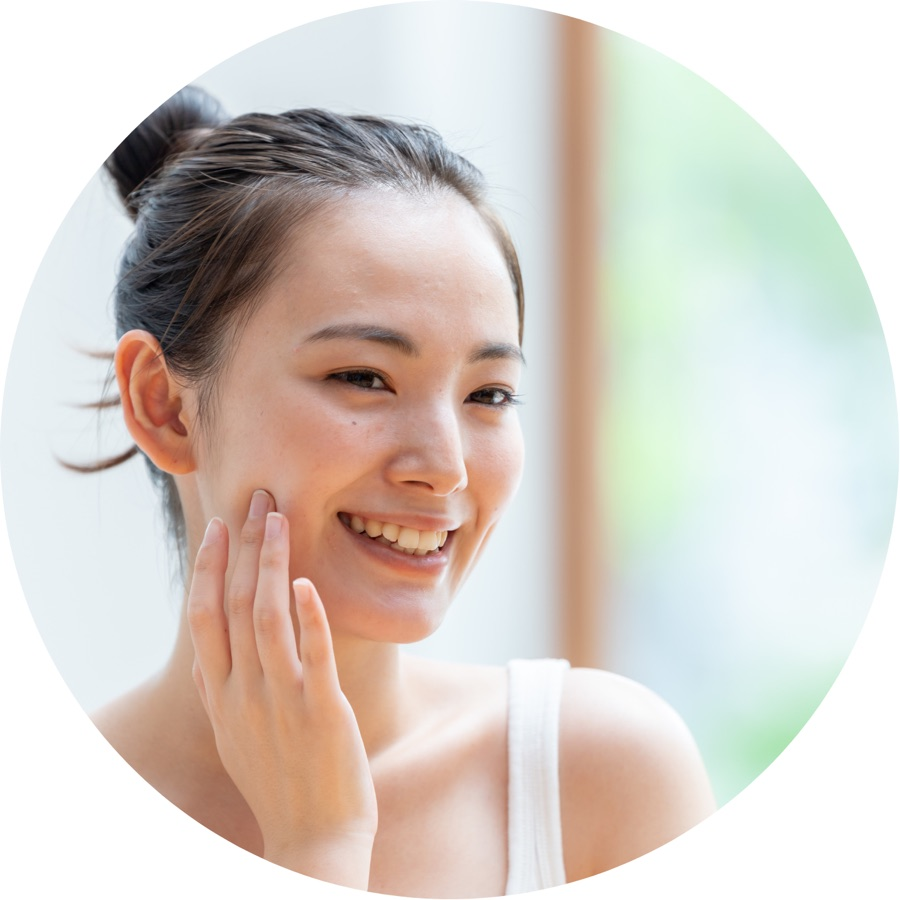

幕張の女性専用 お顔剃り・レディースシェービングサロン
鏡を見るのが、
楽しみになる素肌へ。
JR幕張駅南口から徒歩8分。マンションの一室にある、白で統一したプライベートサロンです。理容師免許を持つ施術歴15年以上のスタッフが、その日のお肌に合わせて、うぶ毛と古い角質をやさしく整えます。

- お客様の評価
- ★★★★★ 5.0
- 担当
- 理容師免許・
施術歴15年以上 - お部屋
- 完全個室・
お子さま連れOK - 営業時間
- 10:00–16:00
こんなお悩みに、お顔剃りを。
女性の顔剃り（レディースシェービング）は、うぶ毛を剃るだけのものではありません。古い角質も一緒に取り除くので、肌の明るさや化粧ノリまで変わります。
- 化粧ノリが悪い、ファンデーションが浮くうぶ毛がなくなると、ベースメイクが均一にのります→
- くすみが気になる、顔色が暗く見える古い角質を取り除き、ワントーン明るい印象に→
- 小鼻の毛穴、肌のざらつき毛穴の吸引とシェービングを組み合わせたコースも→
- 自分で剃ると、肌荒れしてしまうサロンのお顔剃りと自己処理の違いを見る→
- 結婚式・前撮り・成人式の前に整えたい背中やうなじまで、ブライダルシェービングに対応→
- うなじや背中は、自分では見えないアップスタイルや肩の開いた服を着る日の前に→
- 子育て中で、自分のための時間がとれないお子さま連れでもお越しいただけます。平日の日中も営業→
- 施術のあと、そのまま出かけたいメイクブースでお直ししてから、お出かけいただけます→
はじめてのレディースシェービングでも、安心して。
「化粧ノリが悪い」「くすみが気になる」「大切な日の前に整えたい」。そんなお悩みを、カウンセリングでゆっくり伺ってから施術します。何を選べばいいか分からなくても大丈夫です。
理容師
カミソリを使うお顔剃りは、理容師の仕事です。
顔そりは、法律で国家資格「理容師」が行う施術と定められています。LUAでは理容師免許を持つ施術歴15年以上のスタッフが、肌の状態を見ながら、ていねいに剃り進めます。敏感肌の方も、事前のパッチテスト（無料）で確かめてから受けられます。
ワントーン明るく
うぶ毛と一緒に古い角質も取り除くので、お肌のくすみが晴れて、明るくなめらかな印象に。
化粧ノリが変わる
うぶ毛がなくなるとファンデーションが均一にのり、化粧水や美容液もなじみやすくなります。
眠ってしまうほどの心地よさ
スチームで温めながらの施術は、それ自体がリラックスの時間。忙しい毎日の中の、月に一度のご褒美に。
施術の流れ
「はじめての方に」コース（60分）の例です。
- カウンセリングお悩みと肌の状態を伺い、内容を決めます
- クレンジングメイクと汚れをやさしく落とします
- 眉カットご希望の形に整えます
- スチームシェービング温めてやわらかくした肌を剃ります
- 肌別パック肌質に合わせたパックで保湿します
- お仕上げメイクブースでお直しして、そのままお出かけいただけます
お客様の声
レディースシェービングを初めて体験しました。あまりの心地よさに寝落ちしました。施術の穏やかさに、安心してお任せできます。
メールで相談にのっていただき、当日も親身になってメニューを一緒に決めてくれました。お人柄がとても良くて、次の予約もしてしまいました。
お部屋は白で統一されていて清潔感があり、とてもいい香り。肌も潤ってワントーン上がり、眉毛も整って大満足です。
はじめまして、LUAの Ayumi です。
理容師免許を持ち、施術歴は15年以上。これまで多くのお客様のお肌に向き合ってきました。ここに、理容師になったきっかけや、サロンを始めた想いが入ります。
マンションの一室で、おひとりずつ。人目を気にせず、ゆっくり過ごしていただける場所をつくりました。お肌のことなら、どんな小さなお悩みでもお聞かせください。
幕張駅からのアクセス・サロン情報
JR幕張駅・京成幕張駅から歩いて来られる場所です。幕張本郷、検見川、海浜幕張（幕張ベイタウン）など、花見川区・美浜区・習志野市からも、自転車やお車で通える距離にあります。
- サロン名
- やさしいお顔剃りサロン LUA
- 住所
- 〒262-0032 千葉県千葉市花見川区幕張町5丁目417-160 ルミエール幕張Ⅰ 103イトーヨーカドー幕張店の近く、国道14号沿いのマンション内
- 最寄り駅
- JR総武線 幕張駅 南口から徒歩8分京成千葉線 京成幕張駅からも徒歩圏内
- 営業時間
- 10:00–16:00（完全予約制）
- 定休日
- 不定休（予約ページの空き状況をご確認ください）
- お支払い
- 現金・クレジットカードVisa／Mastercard／JCB／American Express
- 設備
- 完全個室（ベッド1台）・メイクブースお子さま連れでもお越しいただけます
道順
JR幕張駅・京成幕張駅から国道14号の方向へ。イトーヨーカドー幕張店を目印に進み、泰山亭 幕張店の隣のマンション「ルミエール幕張Ⅰ」へ。1階の不動産店の横から入り、オートロックのインターフォンで「103」を押してください。
お越しの際に
- 専用駐車場はありません。近くのコインパーキングをご利用ください。
- 駐輪場はありませんが、一時的に停められるスペースがあります。
- 場所が分からないときは、お気軽にお電話ください。